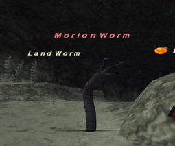

Level 75 reference · Zenith rules
|
Job: Black Mage Notorious Monster |
 |

|
Zone |
Level |
Drops |
Steal |
Spawns |
Notes | ||||||
|
30-32 |
|
1 |
L, H
| ||||||||
|
HP = Detects Low HP; M = Detects Magic; Sc = Follows by Scent; T(S) = True-sight; T(H) = True-hearing JA = Detects job abilities; WS = Detects weaponskills; Z(D) = Asleep in Daytime; Z(N) = Asleep at Nighttime | |||||||||||
Notes:
- Spawned by trading an Iron Ore to one of the ??? located at six different spots in the tunnel; it can be spawned every 15 minutes.
- The various ??? are at (I-10) and (J-8) on the first map; (F-9) on the second map; (I-8) on the northern map.
- Killable by: Solo at level 45
- Traits: Auto Regen
Adapted from Eden Wiki: Morion Worm · Contributors and history · CC BY-SA 4.0. Revision 44668. Layout, links and optional background text adapted for Zenith.